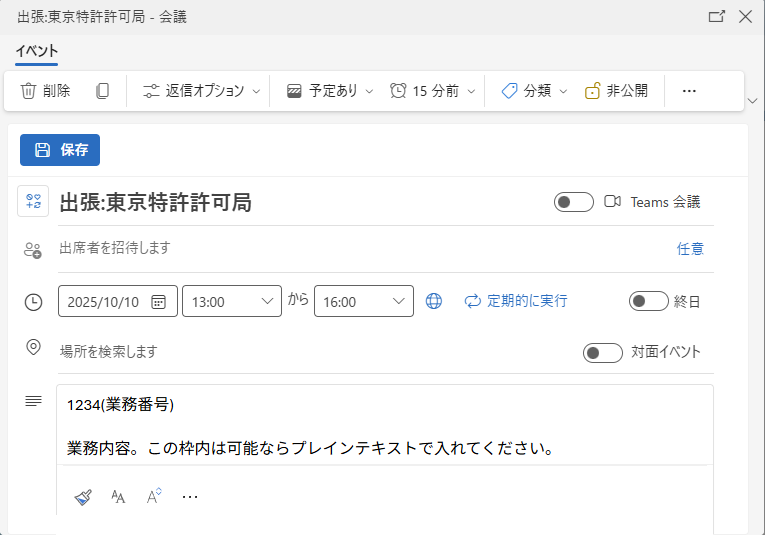
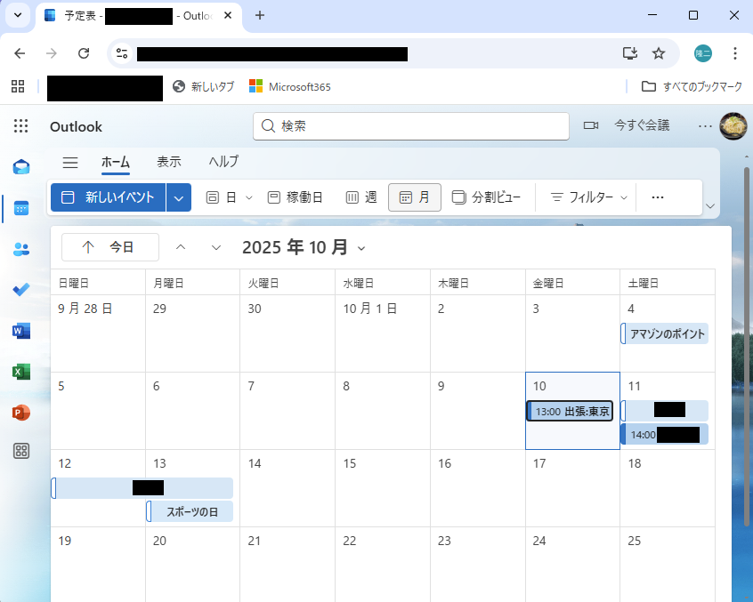
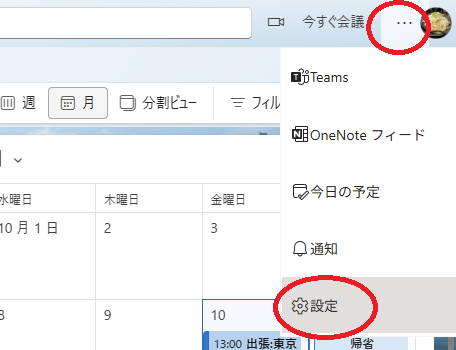
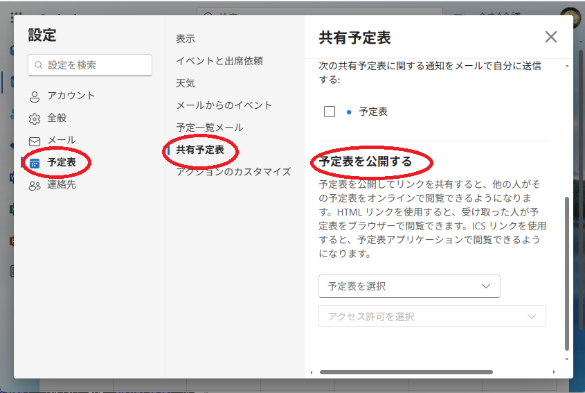
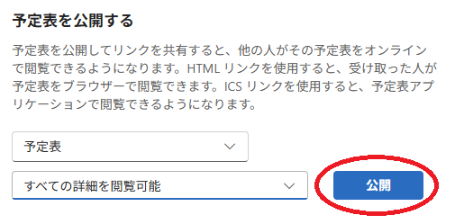
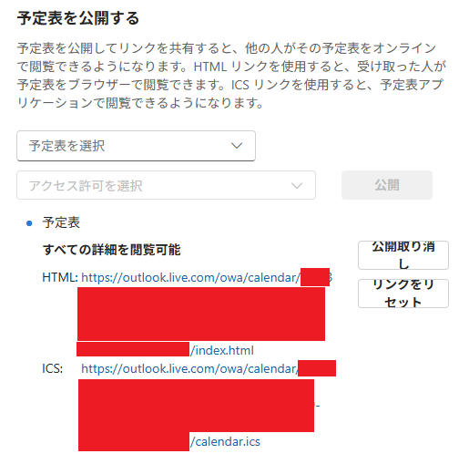
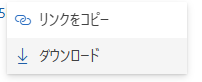
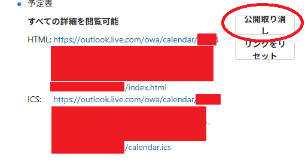

Webブラウザ版のOutlookの2025/9/24現在の画面構成にそって解説しています。 本資料は職場向けの資料とブログ用の資料をまとめて作成してますので、 記入例は職場の指定書式ですので、ブログ閲覧者は気にしないでください。
こんな感じで数点いれてください。メモ欄は可能ならプレインテキストでいれ てください。Garoon形式のCSVに変換した時にうまく情報が読めない可能性あ ります。また色々彩りを加えると行頭に無駄な空行が入り、CSVへの変換時に 失敗する事が多いようです。
数件いれていただければと思います。
※私用を記載してる方は、業務記録で提出するときに私用を消すのを忘れない ように(汗)
設定で「予定表」→「共有予定表」→「予定表を公開する」を選んでください。
以下のような感じで選んでください。スケジュール表の名前は「予定表」以外 の場合もあります。資料では公開項目は「すべての詳細を閲覧可能」を選んで いますが、他の設定は試していません。選択後、「公開」をクリックしてください。
予定表の公開用のURLが設定されます。
ICSのところのURLの文字列をクリックすると下記の選択肢がでますので、「ダウンロード」を選んでください。
スケジュール表が「calendar.ics」というファイル名でダウンロードできます。
ダウンロードが終わったら「公開取り消し」をクリックしてください。
ダウンロード手順は以上です。
このファイル形式はCSV等とはことなり、手作業で書き換えするのは少々困難 です。またこれまでの手順でスケジュールの出力する期間の指定は行ってませ んが、指定ができません。そのため、業務記録として特定の期間のデータを取 り出すのは、なんらかの支援ツールを使っていただいた方がよいかと思います。BEGIN:VEVENT DESCRIPTION:1234(業務番号)\n\n業務内容。この枠内は可能な らプレインテキストで入れてください。\n UID:XXXXXXXXXXXXXXXXXXXXXXXXXXXXXXXXXXXXXX SUMMARY:出張:東京特許許可局 DTSTART;TZID=Tokyo Standard Time:20251010T130000 DTEND;TZID=Tokyo Standard Time:20251010T160000 CLASS:PUBLIC PRIORITY:5 DTSTAMP:20250924T030059Z (省略) END:VEVENT
以上です。